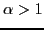

We present a simple automatic over-correction mechanism to accelerate multilevel aggregation methods for the computation of the stationary probability vector of irreducible Markov chains. Over-correction is motivated by the observation that while the correction typically approximates the error very well in the sense of its ``direction'', it may not provide a good approximation in the sense of its ``size'' [Vanek and Míka, 1992]. In the case of a multiplicative correction scheme, which is commonly used for Markov chains, each component of the correction is exponentiated by a small factor

, that is recalculated on each level. Applying the over-correction in this way has the added benefit of maintaining positivity of the correction. Numerical experiments demonstrate that this approach can lead to significant speedup of basic multilevel aggregation for Markov chains, at little extra cost.